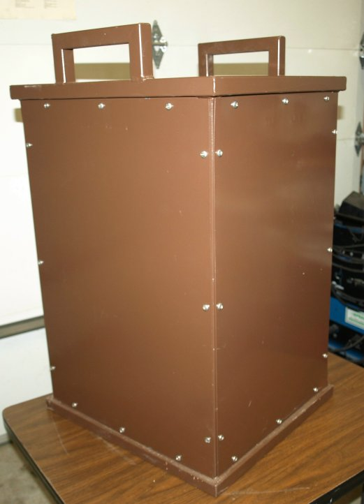
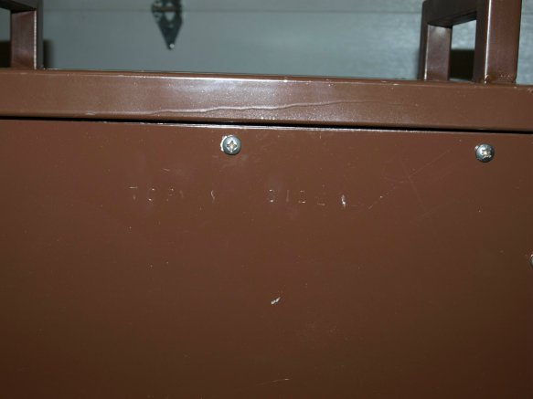
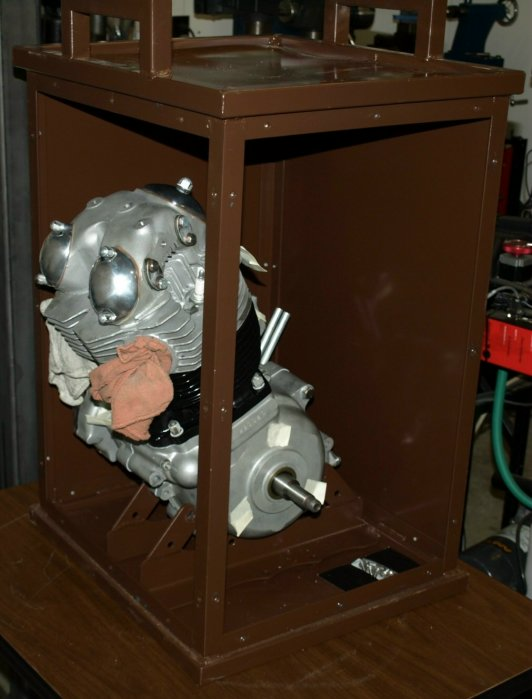
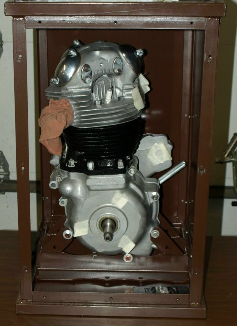
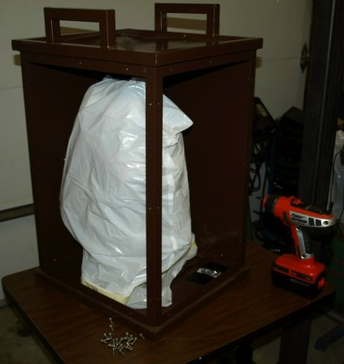

Old Britts Engine Shipping Crate

We have a crate that was build to ship the complete Norton twin engine to and from Old Britts for engine work. We will ship the crate to you by UPS with a return shipping label (the empty crate weighs approximately 50lbs.) You then bolt your engine into the crate and ship it back to us (the crate with an engine weighs approximately 140lbs.). After we finish the work we will ship the engine back to you with another return shipping label to return the crate to us. As some of the pictures show, we tape off all openings and seal the engine in a plastic bag when we ship it back to you to keep the engine as clean as possible. We will charge you a deposit of $200 for the crate, which will be credited back as soon as we receive the crate back. The deposit is only to cover the crate if you do not return it -- it does not cover shipping damage. Shipping damage will be covered by insurance.
The crate has a welded frame that the bottom of the engine bolts to and with handles on the top and metal sides.
Before placing your engine in the crate, please:
Make sure all the oil is drained from your engine and all drain plugs are firmly in place.
Keep the timing cover in place and tight. Keep the rocker covers in place and tight.
Tape over the three or four drive side inner primary mounting holes, as shown in later pictures.
Remove the front and side panels. These panels are held in place by 12 philip head screws. The front panel is 16 3/4" wide by 23 3/4" high. the side panel is 15" wide by 23 3/4" high. Both panels are stamped at the top of the panel, "TOP FRONT" and "TOP SIDE".

You will find the four mounting bolts (two 3/8 x 24 and two 5/16 x 24) tied to the mounting bracket on the bottom of the crate. You will also find a plastic bag taped to the bottom of the crate containing spare philip head screws. Do not remove the screws unless you need to replace one of the screws you just removed from the panels.
You will need to remove the one bottom crank case bolt (06-2663) or stud (NME3214) from your engine prior to placing the engine into the crate. Please keep this bolt or stud for we do not need it to perform our work.
The engine is placed into the crate, back end first, at an angle, then turned upright so all four mounting holes align with the four holes in the crank case.

With the engine in the upright position, insert the four mounting bolts with one washer under the head. The two 3/8" bolts go in the front and back. The two 5/16 bolts go in the center. You may need to jocky the engine back and forth to get all the bolt holes to line up. After all four bolts are in place, place the flat washer, then the lock washer and then the nut. Tighten all the nuts.

Place a plastic bag over the engine and secure it at the bottom with some tape.

Put the side panels back on the crate with the stamping at the top and readable from the out side. Just start all 12 screws into a panel, do not tighten until all 12 screws have been started.
Affix the enclosed return UPS label to the top of the crate and tape with clear tape to secure.
Remove the front and side panels.
Remove the plactic bag off the engine.
Remove the four mounting bolts.
Tilt the engine forward and remove from the crate.
You will need to return the four bolts, washers,and nuts. Place them in the enclosed plastic bag and fasten to the bottom mounting bracket using the enclosed zip ties. DO NOT place them through the mounting brackets and tighten them up, for this will squeeze the brackets together.
Put the side panels back on the crate with the stamping at the top and readable from the outside. Just start all 12 screws into a panel, do not tighten until all 12 screws have been started.
Affix the enclosed return UPS label to the top of the crate and tape with clear tape to secure.
This page was written and designed by F. H. Eaton
& Associates if you have any questions or comments please
contact us at infon@fheaton.com